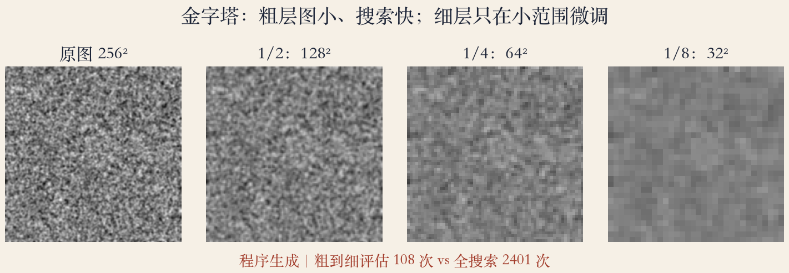
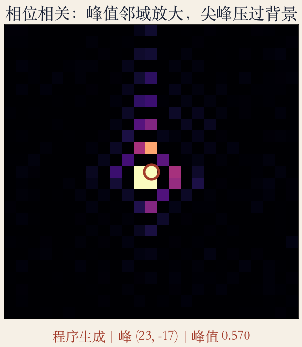
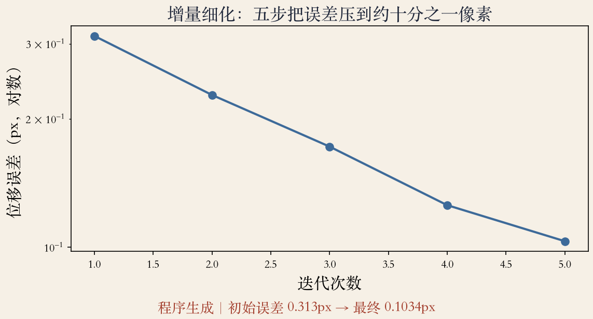

开场 · 三条路
三条路，一个目标
- 全搜索太慢，需要更快找到同一个位移。
- 路一：图像金字塔，先粗后细。
- 路二：傅里叶与相位相关，一次算完。
- 路三：增量细化，把位移抠到亚像素。
依据：原书第 562 到 567 页
全搜索
保证最优，但成本太高
- 整数或亚像素步长都能全搜索。
- 视频编码的块匹配常搜正负十六像素。
- 256 见方、正负二十四：2401 次平方差。
- 范围再大，成本按平方涨。
依据：原书第 562 页
图像金字塔
先看缩略图，再放大
- 先构造图像金字塔，在粗层搜大致位置。
- 再逐层细化，粗层结果传给细层。
- 每层先高斯平滑再降采样，避免混叠。
- 粗层一个像素，对应原图好几个像素。
依据：原书第 562 页
粗到细
结果传下去，位移按尺度加倍
- 粗层估计初始化细层的小范围搜索。
- 细层位移要按尺度加倍。
- 三层金字塔只评估 108 次。
- 全搜索 2401 次，差二十多倍。
依据：原书第 562 到 563 页；本集实验
评估数
三层：108 次
全搜索：2401 次
整数位移相同
风险
省的是搜索，不是精度
- 金字塔不保证和全搜索完全一样。
- 通常几乎一样好，而且快得多。
- 粗层选错，细层只在错误附近微调。
- 粗层范围要覆盖真实运动，纹理不能抹平。
依据：原书第 562 页
补救
粗层保留多个候选种子
分别带到细层
多种子降风险，但更贵
金字塔 · 四层
粗层定大位置
- 原图、二分之一、四分之一、八分之一。
- 层数越高，图越小、搜索越快。
- 细节也越少，八分之一层只剩大色块。
- 常用三到五层，按最大位移和纹理选。
依据：本集实验

四层金字塔：原图到八分之一，图越小细节越少｜程序生成，未用教材或论文原图
傅里叶位移性质
位移藏在相位里
- 平移后，傅里叶变换幅度不变。
- 相位随平移线性变化。
- 频域一次乘法，算完所有平移的相关。
- 适合全局平移，加窗前先补边到两倍。
依据：原书第 563 页
FFT 与加窗
快，但要加窗
- FFT：O(NM log NM)。
- 全搜索：O(N²M²)，重叠大时频域快很多。
- 傅里叶相关默认循环移位。
- 重叠小或子图匹配，必须加窗。
依据：原书第 564 页；本集实验
本集实测
不加窗：边界有十字亮线
加 Hann 窗：峰值干净
先做均值去除
相位相关
白化成一个尖峰
- 每个频率的乘积除以幅度，做白化。
- 再反变换，理想输出一个尖峰。
- 峰在横二十三、纵负十七。
- 峰值 0.570，和金字塔整数解一致。
依据：原书第 565 页；本集实验
怎么读峰
峰越尖，位移越确定
峰变宽，说明缺约束
亚像素还要细化
噪声风险
没有万能的加速方法
- 白化会放大某些频段的噪声。
- 低纹理、强噪声时，相位相关可能更差。
- 可以先低通滤波，再做白化。
- 或者换回金字塔，更稳。
依据：原书第 565 页
选型
频谱干净、平移大：可用
低信噪比：先滤波
别只看漂亮尖峰
峰值邻域
还要看峰有多突出
- 中心亮点对应真实位移。
- 周围是噪声旁瓣。
- 峰值 0.570，明显高于邻域。
- 峰值与次峰的比，是最便宜的置信度。
依据：原书第 565 页；本集实验

相位相关峰值邻域：中心尖峰对应真实位移｜程序生成，未用教材或论文原图
增量细化
用梯度修正小数
- 前面的方法最多到整像素。
- 在当前位移附近，把目标图按梯度线性化。
- 残差约等于梯度乘修正量。
- 解小方程，只在当前解附近迭代。
依据：原书第 566 页
法方程
二乘二方程就够
- A 是梯度外积的和。
- b 是负残差乘梯度。
- 五步把误差从 0.313 压到 0.103 像素。
- 每步只解一个二乘二方程。
依据：原书第 567 页；本集实验
为什么还不归零
插值与噪声
线性化近似
实际系统设阈值就停
收敛曲线
看曲线设阈值
- 误差随迭代下降，纵轴是对数。
- 五步从约三分之一像素降到约十分之一像素。
- 前几步快，后面越来越慢。
- 曲线上升，先查符号、插值与初值。
依据：本集实验

增量细化：五步把误差从约三分之一像素压到约十分之一像素｜程序生成，未用教材或论文原图
选型
看数据，不看名气
- 大位移、纹理足：用金字塔。
- 全局平移、要一次算完：用相位相关。
- 亚像素：最后都用增量细化。
- 运动模型选错，三条路都救不了精度。
依据：原书第 562 到 567 页
组合顺序
金字塔给整数解
细化抠小数
相位相关可替代初值
小结与移交
三条路各有前提
- 金字塔：用粗层换搜索速度。
- 相位相关：用频域换一次算完。
- 增量细化：用梯度换亚像素。
- 下一集：把平移推广到参数运动。
依据：原书第 562 到 567 页
各自怕什么
金字塔怕粗层丢结构
相位相关怕低信噪比
细化怕初值太远